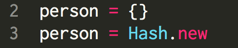
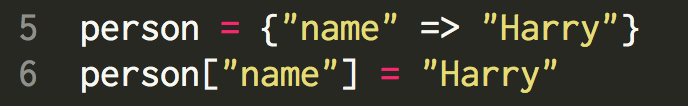
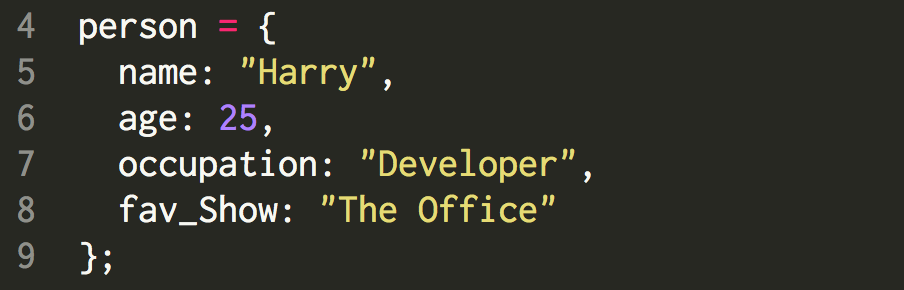
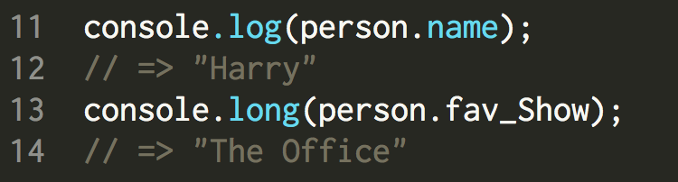

Until now, we have been discussing Ruby only. But today, I want us to talk about a new programming language called JavaScript. JavaScript is a great language for the web browser, with which we can take control of what we want the brower to do. For the sake of our discussion, we will tune our focus on Ruby hashes and JavaScript objects. Hopefully by the end of reading this entry, you will get an idea of some of the similarities and differences of the two. Let's start off by looking at the how the Ruby hashes and JavaScript objects look like.
Hashes in ruby are given a variable name and key-and-value pair(s) inside the curly brackets. First, let's create an empty hash. Either of these will do the job:

To insert a key-and-value pair, you can choose from the following two choices:

The name on the left side of the ('=') sign is the variable name. Inside the curly brackets, each element has two parts. The first thing is the key, and the key has its corresponding value. Key and value are assigned by using the arrow ('=>') sign. You can also add a key-and-value pair by using square brackets, as shown in the previous diagram -- it will result in the same hash value as the first example. In order to access a value from a hash, you can use its corresponding key like so:
An object in JavaScript is -- or at least looks similar to -- a hash in Ruby. Let me show you how to create an object in JavaScript. Be prepared for some déjà vu.
What we did was create an object with an arbitrary variable name and a set of curly brackets. Now on to adding elements, or properties. Just like a hash in Ruby, you can add as many properties into a JavaScript object. You simply write each property and its corresponding value using ':'. Let me add multiple properties for practice.

In order to access a value of a JavaScript object, you can call a method with the property name using a dot. Here's an example:

How about some differences between a Ruby hash and a JavaScript object? Here is a list: